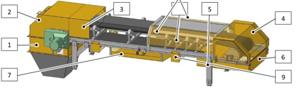

Operating the Belt Conveyor
SBS-OP-138B
Revised: 2024-02-15
Purpose/Application
Describes the procedures for operating the belt conveyor.
PPE Required
General
Bump cap/hard hat, safety glasses with foam liner, proper hearing protection, fire-resistant long-sleeved shirt, safety toe boots.
Respirator or PAPR in case of a toxic batch material spill.
Safety Hazard
Respirable Crystalline Silica
Crystalline silica has been classified as a human lung carcinogen. Breathing crystalline silica dust can cause silicosis, which in severe cases can be disabling, or even fatal.

Safety Controls
The Hazard Communication Standard (HCS) requires chemicals to have Safety Data Sheets (SDS). Refer to the SDS for chemicals listed in this SOP for additional hazards, first aid measures, toxicological information, accidental release measures, and handling/storage of the chemical.
Review the Emergency Action Plan before performing work.
Have a fire extinguisher nearby
Equipment Needed
Access to the belt conveyor control screen and power switch.
Comments
Before starting work:
- Read this document thoroughly.
- Complete the required training.
- Wear the required PPE.
This SOP uses images from the vendor manual.
Related Resources
- SBS-OP-138A Overview of the Belt Conveyor
- SBS-ET-138 Troubleshooting the Belt Conveyor
- SBS-MR-138 Belt Conveyor Maintenance
- Vendor manual in the Resources library
Safety Mechanisms and Controls
-
he rotary survey sends pulses to the controller to indicate that the tensioning pulley is turning. These pulses are evaluated by the PLC or a control device (except in manual operation).
- The rotary survey is an incremental encoder (inductive proximity switch) (1) and cam switch (2) that are mounted at the end of the tensioning pulley shaft.
- If the pulses are not received, the belt conveyor will be switched off after a time delay in order to protect it against damage.
Note:If the rotary survey triggers, it is necessary to perform the following steps.
- Identify the reason why the rotary survey triggered.
- Eliminate the reason that caused the rotary survey to trigger.
- Acknowledge the error message at the control cabinet (blue pushbutton).
- The belt conveyor can now be restarted.

-
The drive station is covered by a hood construction (1 and 2). On belt conveyors, if the frame area after the top hood is not covered or is constructed without continuous guide gutters, then this area is covered by additional protective housings (3).
- The tensioning station is covered by a hood-type cover (4). A cover at the inner belt scraper (5) prevents anyone from reaching into the tensioning pulley’s pull-in area from above.
- If the belt conveyor is installed at a height so that the bottom belt is located at a height of 700 mm to 2500 mm above the installation level, then the area below the tensioning pulley is equipped with a protective housing (6). In this case, the bottom belt is also covered by protective housings (7) in the working areas and areas where persons stand or pass by.
- Protective covers (8) at the guide gutters prevent body parts from being crushed and pulled in. Protective cages (9) at the return rollers prevents the rollers from falling down.
- Because there is clearance of at least 50 mm between the conveyor belt and the return roller, these are not covered.


-
A protective grille (1) with a 30 x 30-mm mesh is affixed to the control opening in the drive station cover in order to prevent anyone from reaching into the belt conveyor.
- The control opening is located in the top hood of the belt conveyor drive station in order to permit observation of the machine’s movements during operation.
CAUTION:When the control opening is open, there is a danger of injury, especially to the eyes. Wear protective glasses. Keep the control opening closed.

Operating the Belt Conveyor
-
To start the belt conveyor:
- Make sure that the belt conveyor and safety mechanisms are in fault-free condition and functioning correctly.
- Switch on the belt conveyor using the lockable main switch at the control cabinet.
- Acknowledge the emergency stop using the user interface at the control cabinet.
- Place in Manual mode to start the belt.

-
To turn off the belt conveyor:
- Shut down the belt conveyor using the user interface at the control cabinet.
- The belt conveyor continues to run and terminates the movements of the actuators/
- Switch off the belt conveyor using the lockable main switch.
- The belt conveyor is now switched off.

Approval
|
Person |
Role |
|---|---|
|
Michael Hu |
Process Development Squad Lead |
|
David Jepsen |
Melter Training Specialist |
|
Phillip Wilson |
EHS Continuous Improvement Manager |
Revision History
|
2024-02-15 |
Approved by Michael Hu, Process Development Squad Lead |
|
Original Issue |